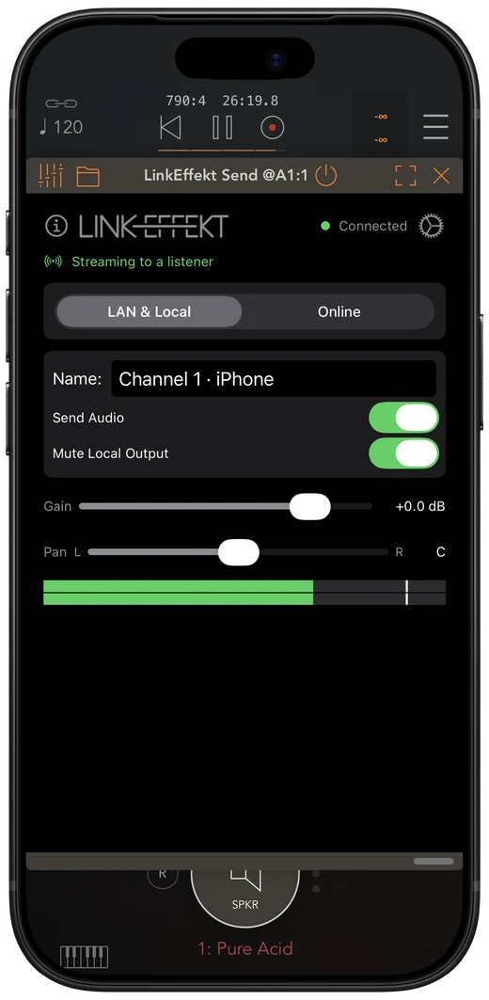
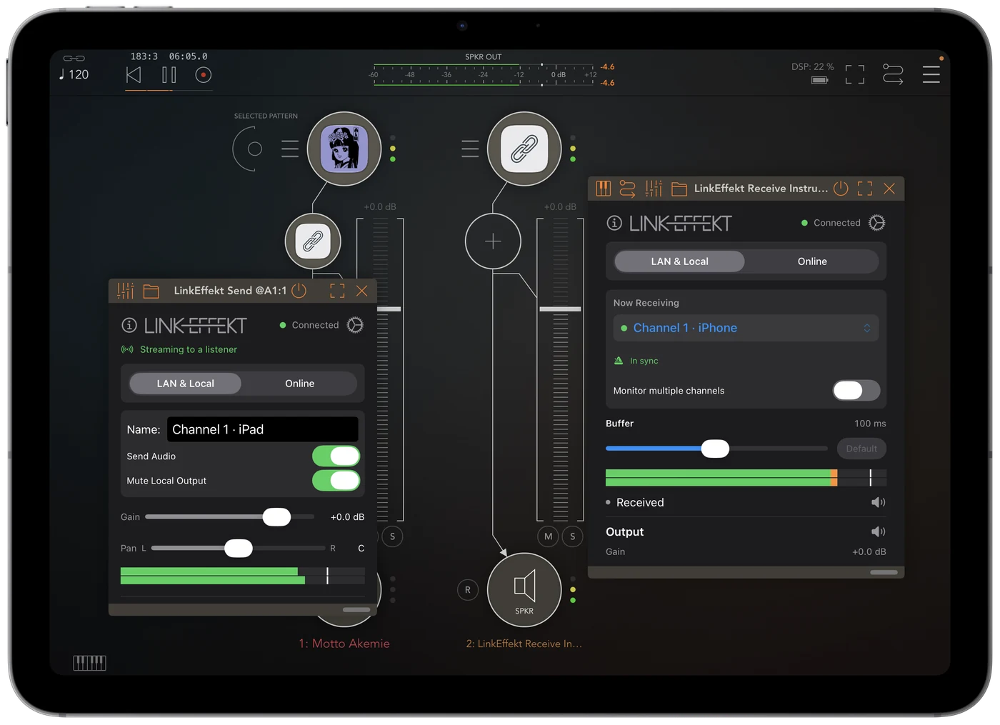

Stream audio between your music apps, right on the beat.
Send a track in one app. Hear it in another app on the same device, on a second device or online with a partner, right on your beat. Ableton Live 12.4+ receives it too.


AUv3: runs inside the host you already use
Load LinkEffekt in AUM, Logic Pro, Cubasis, GarageBand, Drambo or any other AUv3 host. No standalone routing app, no cables.
LinkEffekt Send
Insert it on a track to stream that track's stereo audio. Each instance is its own named channel.
LinkEffekt Receive
Pick a channel and hear it. Works in every host. Monitor several channels at once with the in-app purchase.
LinkEffekt Receive Instrument
The same receiver as a sound source, for AUM source slots and software-instrument tracks.
One host, one device, your network, or the internet
On this device or your network
- Another app on the same device, or another track in the same host: on the beat with almost no delay, a direct path with no Wi-Fi, no Local Network permission and no Link setup.
- Same Wi-Fi, zero setup: channels appear by name and device.
- On the beat between devices, in both directions of a jam (sender in AUM or Logic Pro). Where the sending app cannot do that, Bar Sync locks the audio to your bar.
- Streams straight into Ableton Live 12.4+.
Online · rooms over the internet
- Create a room, share the code, jam together.
- Peer-to-peer and encrypted end-to-end (DTLS).
- Bar Sync delays by whole bars: the peer's “1” lands on your “1”.
- Two-way audio in a single slot with “Send my track”.
Free to start, one purchase for everything
Free
1 Send and 1 Receive channel, fully functional on your local network. No account, no ads.
Unlimited Channels
One-time purchase: unlimited instances, multi-channel monitoring, and the Online (internet) mode.
iOS 17 or later (iPhone and iPad) · any AUv3 host. Ableton Live 12.4+ on the same network sends and receives too.